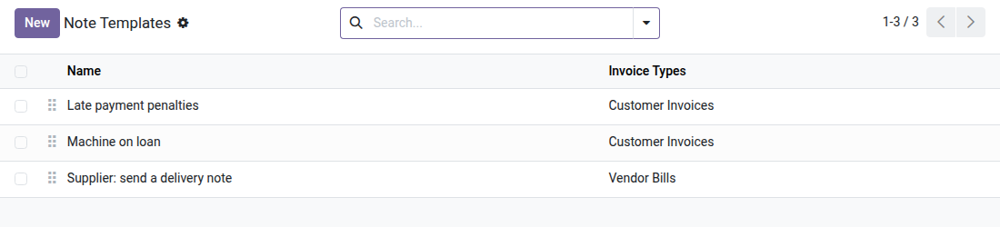
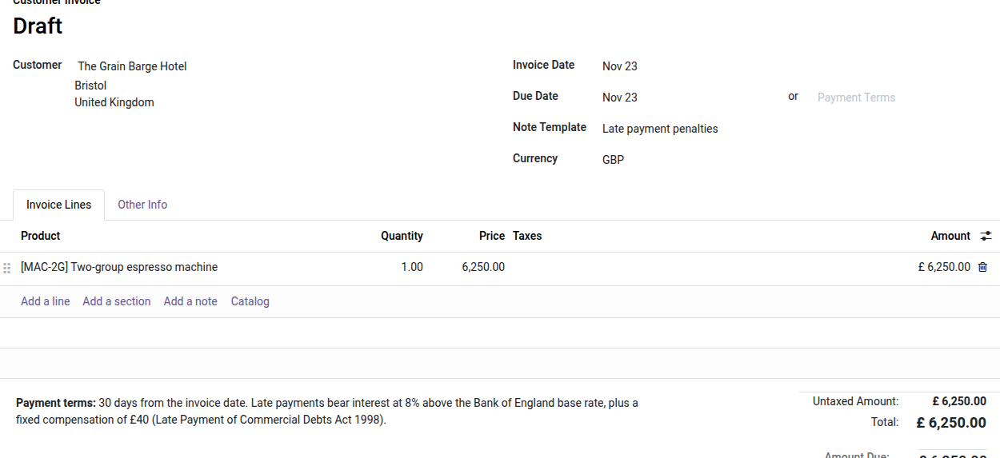
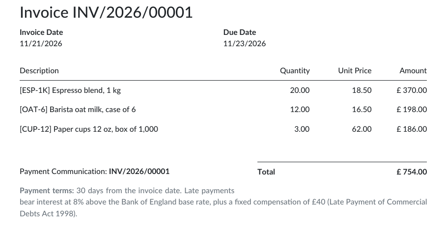

Invoice Comment Templates
No more manual copy-paste: insert your recurring notes in one click, printed directly on the invoice PDF.
Late payment penalties, early payment discount, VAT legal notices, delivery instructions… The same notes come back on all your invoices, and every accountant retypes them their own way. The result: inconsistent wording, notices sometimes forgotten, and time lost on every entry. A badly worded text on a sent invoice means one more reminder or dispute to handle.
What it adds
- 📋 A library of approved templates — write each note only once (rich HTML: bold, lists, formatting) and manage them from Accounting → Configuration → Comment Templates.
- 🎯 Targeting by invoice type — each template can be limited to customer invoices, vendor bills, or open to both: the right text in the right place.
- ⚡ Automatic one-click insertion — a dropdown field on the invoice is all it takes; the note is instantly copied into the terms (narration), editable case by case if needed.
- 📄 Native printing in the PDF — the Odoo narration is already printed at the bottom of the invoice; no QWeb report customization required.
- 🗂️ Archiving without deletion — deactivate seasonal templates to hide them without losing their content; reactivate them with a checkbox.
In screenshots
1. A library of approved notes
Each note is written once, for customer invoices, vendor bills or both. Seasonal ones are archived, not deleted.

2. Chosen on the invoice
Pick the template on the invoice: its text goes into the terms, still editable for this invoice.

3. Printed under the total
The note prints at the bottom of the invoice PDF, with no report to customize.

Why install it
- Guaranteed consistency: the whole team uses the same approved wording — no more variations from one accountant to another.
- Zero development: works with the native Odoo PDF, without touching QWeb reports or layout views.
- Immediate rollout: install, create your first templates in 5 minutes, and the accounting team saves time from the very first invoice.
- Open-source module (LGPL-3): open source code, usable without restriction on your Community or Enterprise instance.
License LGPL-3 — compatible with Odoo 20.0. Support: apps@odooskills.com.